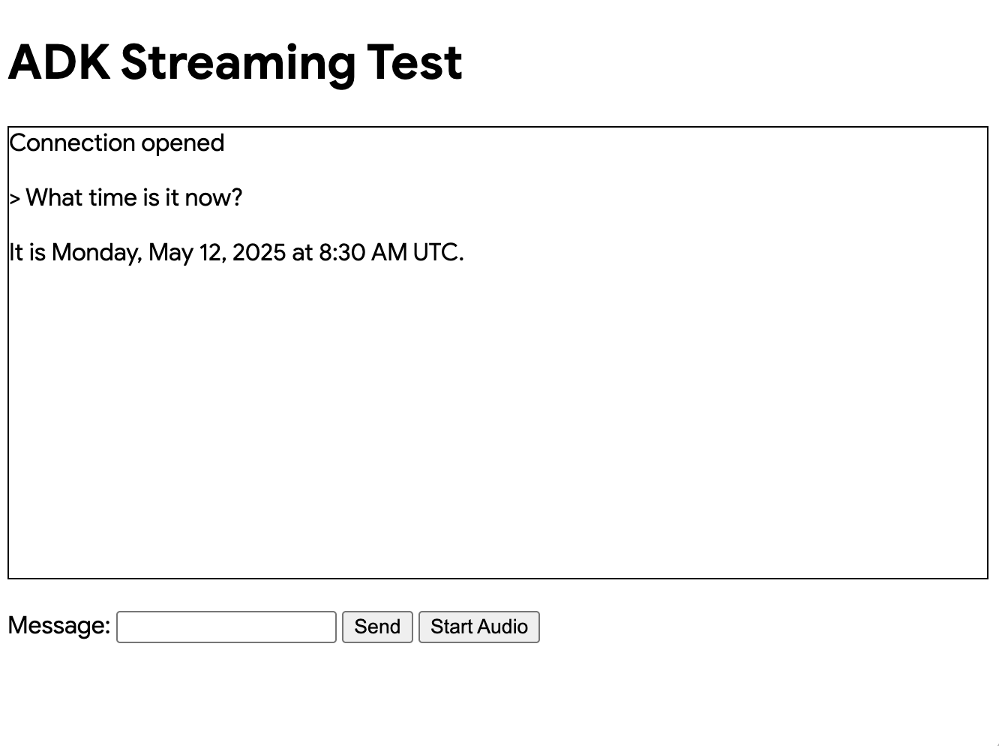

自訂音訊串流應用程式（WebSocket）¶
本文將概述一個以 Agent Development Kit (ADK) 串流功能與 FastAPI 建立的自訂非同步網頁應用程式，其支援透過 WebSocket 進行即時、雙向的語音與文字通訊，並包含伺服器端與客戶端程式碼說明。
注意：本指南假設你已具備 JavaScript 與 Python asyncio 程式設計經驗。
支援語音／視訊串流的模型¶
若要在 ADK 中使用語音／視訊串流功能，必須選用支援 Gemini Live API 的 Gemini 模型。你可以在文件說明中查詢支援 Gemini Live API 的模型 ID：
另有 Server Sent Events (SSE) 版本的範例可供參考。
1. 安裝 ADK¶
建立並啟用虛擬環境（建議步驟）：
# Create
python -m venv .venv
# Activate (each new terminal)
# macOS/Linux: source .venv/bin/activate
# Windows CMD: .venv\Scripts\activate.bat
# Windows PowerShell: .venv\Scripts\Activate.ps1
安裝 Agent Development Kit (ADK)：
請使用以下指令設定 SSL_CERT_FILE 變數。
下載範例程式碼：
git clone --no-checkout https://github.com/google/adk-docs.git
cd adk-docs
git sparse-checkout init --cone
git sparse-checkout set examples/python/snippets/streaming/adk-streaming-ws
git checkout main
cd examples/python/snippets/streaming/adk-streaming-ws/app
此範例程式碼包含以下檔案與資料夾：
adk-streaming-ws/
└── app/ # the web app folder
├── .env # Gemini API key / Google Cloud Project ID
├── main.py # FastAPI web app
├── static/ # Static content folder
| ├── js # JavaScript files folder (includes app.js)
| └── index.html # The web client page
└── google_search_agent/ # Agent folder
├── __init__.py # Python package
└── agent.py # Agent definition
2. 設定平台¶
要執行範例應用程式，請從 Google AI Studio 或 Google Cloud Vertex AI 擇一平台進行：
- 從 Google AI Studio 取得 API KEY。
-
開啟 (
app/) 資料夾中的.env檔案，並將以下程式碼複製貼上。 -
將
PASTE_YOUR_ACTUAL_API_KEY_HERE替換為你實際的API KEY。
- 你需要一個已存在的
Google Cloud 帳戶和一個
專案。
- 設定 Google Cloud 專案
- 設定 gcloud CLI
- 從終端機執行
gcloud auth login，以驗證 Google Cloud 身份。 - 啟用 Vertex AI API。
-
開啟位於 (
app/) 資料夾內的.env檔案。複製並貼上以下程式碼，並更新專案 ID 與 Location。
agent.py¶
google_search_agent 資料夾中的 agent 定義程式碼 agent.py 是撰寫 agent 邏輯的地方：
from google.adk.agents import Agent
from google.adk.tools import google_search # Import the tool
root_agent = Agent(
name="google_search_agent",
model="gemini-2.0-flash-exp", # if this model does not work, try below
#model="gemini-2.0-flash-live-001",
description="Agent to answer questions using Google Search.",
instruction="Answer the question using the Google Search tool.",
tools=[google_search],
)
注意： 若要同時啟用文字與音訊／視訊輸入，模型必須支援 generateContent（用於文字）與 bidiGenerateContent 方法。請參閱 List Models Documentation 以確認這些功能。本快速開始範例使用 gemini-2.0-flash-exp 模型作為示範。
請注意，結合 Google Search 進行知識接地 (grounding) 的能力整合得非常簡單。Agent 類別與 google_search 工具負責處理與大型語言模型 (LLM) 及知識接地 (grounding) 搜尋 API 的複雜互動，讓你能專注於 agent 的目標與行為設計。

3. 與你的串流應用互動¶
1. 切換到正確的目錄：
為了讓你的 agent 能順利執行，請確認你已經位於 app 資料夾（adk-streaming-ws/app）
2. 啟動 Fast API：執行以下指令以啟動命令列介面 (Command Line Interface)
3. 以文字模式存取應用程式： 當應用程式啟動後，終端機會顯示一個本機 URL（例如：http://localhost:8000）。點擊這個連結，即可在瀏覽器中開啟 UI。
現在你應該會看到如下所示的 UI：

試著詢問一個問題 What time is it now?。agent 會利用 Google Search 回答你的問題。你會注意到 UI 會以串流文字的方式顯示 agent 的回應。即使 agent 還在回應中，你也可以隨時傳送訊息給 agent。這展示了 Agent Development Kit (ADK) Streaming 的雙向通訊能力。
4. 以語音模式存取應用程式： 現在請點擊 Start Audio 按鈕。應用程式會以語音模式重新連線至伺服器，UI 首次會顯示以下對話框：

點擊 Allow while visiting the site，接著你會看到瀏覽器頂部會顯示麥克風圖示：

現在你可以用語音與 agent 對話。像 What time is it now? 這樣用語音提問，你也會聽到 agent 以語音回應。由於 ADK Streaming 支援多種語言，因此也能以支援的語言回答問題。
5. 檢查主控台日誌
如果你使用的是 Chrome 瀏覽器，請右鍵點擊並選擇 Inspect 以開啟 DevTools。在 Console 上，你可以看到如 [CLIENT TO AGENT] 和 [AGENT TO CLIENT] 等進出音訊資料，代表瀏覽器與伺服器之間的音訊資料串流。
同時，在應用程式伺服器的主控台中，你應該會看到類似以下的內容：
INFO: ('127.0.0.1', 50068) - "WebSocket /ws/70070018?is_audio=true" [accepted]
Client #70070018 connected, audio mode: true
INFO: connection open
INFO: 127.0.0.1:50061 - "GET /static/js/pcm-player-processor.js HTTP/1.1" 200 OK
INFO: 127.0.0.1:50060 - "GET /static/js/pcm-recorder-processor.js HTTP/1.1" 200 OK
[AGENT TO CLIENT]: audio/pcm: 9600 bytes.
INFO: 127.0.0.1:50082 - "GET /favicon.ico HTTP/1.1" 404 Not Found
[AGENT TO CLIENT]: audio/pcm: 11520 bytes.
[AGENT TO CLIENT]: audio/pcm: 11520 bytes.
這些主控台日誌對於開發自訂串流應用程式時非常重要。在許多情況下，瀏覽器與伺服器之間的通訊失敗，往往是串流應用程式錯誤的主要原因。
6. 疑難排解提示
- 當
ws://無法運作時： 如果你在 Chrome DevTools 上看到有關ws://連線的錯誤，請嘗試將ws://替換為wss://，位置在app/static/js/app.js的第 28 行。這種情況通常發生於你在雲端環境執行範例，並且透過代理連線從瀏覽器連接時。 - 當
gemini-2.0-flash-exp模型無法運作時： 如果你在應用程式伺服器主控台上看到有關gemini-2.0-flash-exp模型可用性的錯誤，請嘗試將其替換為gemini-2.0-flash-live-001，位置在app/google_search_agent/agent.py的第 6 行。
4. 伺服器端程式碼概覽¶
這個伺服器應用程式透過 WebSocket，實現與 Agent Development Kit (ADK) agent 的即時串流互動。用戶端可以傳送文字或語音給 ADK agent，並接收串流的文字或語音回應。
核心功能： 1. 初始化與管理 ADK agent session。 2. 處理用戶端 WebSocket 連線。 3. 將用戶端訊息轉發給 ADK agent。 4. 將 ADK agent 的串流回應（文字/語音）傳送給用戶端。
ADK 串流設定¶
import os
import json
import asyncio
import base64
from pathlib import Path
from dotenv import load_dotenv
from google.genai.types import (
Part,
Content,
Blob,
)
from google.adk.runners import Runner
from google.adk.agents import LiveRequestQueue
from google.adk.agents.run_config import RunConfig
from google.adk.sessions.in_memory_session_service import InMemorySessionService
from fastapi import FastAPI, WebSocket
from fastapi.staticfiles import StaticFiles
from fastapi.responses import FileResponse
from google_search_agent.agent import root_agent
- 匯入（Imports）： 包含標準 Python 函式庫、
dotenv（用於環境變數）、Agent Development Kit (ADK) 以及 FastAPI。 load_dotenv()： 載入環境變數。APP_NAME： ADK 的應用程式識別碼。session_service = InMemorySessionService()： 初始化記憶體內的 ADK session service，適用於單一實例或開發環境。正式環境建議使用持久性儲存。
start_agent_session(session_id, is_audio=False)¶
async def start_agent_session(user_id, is_audio=False):
"""Starts an agent session"""
# Create a Runner
runner = InMemoryRunner(
app_name=APP_NAME,
agent=root_agent,
)
# Create a Session
session = await runner.session_service.create_session(
app_name=APP_NAME,
user_id=user_id, # Replace with actual user ID
)
# Set response modality
modality = "AUDIO" if is_audio else "TEXT"
run_config = RunConfig(response_modalities=[modality])
# Optional: Enable session resumption for improved reliability
# run_config = RunConfig(
# response_modalities=[modality],
# session_resumption=types.SessionResumptionConfig()
# )
# Create a LiveRequestQueue for this session
live_request_queue = LiveRequestQueue()
# Start agent session
live_events = runner.run_live(
session=session,
live_request_queue=live_request_queue,
run_config=run_config,
)
return live_events, live_request_queue
此函式會初始化一個 Agent Development Kit (ADK) agent 的即時 session。
| 參數 | 類型 | 說明 |
|---|---|---|
user_id |
str |
唯一的 client 識別碼。 |
is_audio |
bool |
True 用於語音回應，False 用於文字（預設）。 |
主要步驟：
1. 建立 Runner： 實例化對應 root_agent 的 ADK runner。
2. 建立 Session： 建立一個 ADK session。
3. 設定回應模式： 設定 agent 回應為 "AUDIO" 或 "TEXT"。
4. 建立 LiveRequestQueue： 建立一個用於 client 輸入至 agent 的佇列。
5. 啟動 agent session： runner.run_live(...) 啟動 agent，回傳：
* live_events：agent 事件（文字、語音、完成）的非同步可疊代物件。
* live_request_queue：傳送資料給 agent 的佇列。
回傳： (live_events, live_request_queue)。
Session 恢復設定¶
ADK 支援即時 session 恢復，以提升串流對話時的可靠性。此功能可在因網路問題導致即時連線中斷時，自動重新連線。
啟用 Session 恢復¶
若要啟用 session 恢復，請執行以下步驟：
-
匯入所需型別：
-
在 RunConfig 中設定 session resumption：
Session Resumption 功能¶
- 自動 Handle 快取 - 系統會在即時對話期間自動快取 session resumption handle
- 透明重連 - 當連線中斷時，系統會嘗試使用已快取的 handle 進行恢復
- 上下文保留 - 對話的上下文與狀態會在重連過程中維持不變
- 網路韌性 - 在網路不穩定的情況下，能提供更佳的使用者體驗
實作說明¶
- session resumption handle 由 Agent Development Kit (ADK) 框架內部自動管理
- 不需要額外修改 client 端程式碼
- 此功能對於長時間執行的串流對話特別有幫助
- 連線中斷對使用者體驗的影響將大幅降低
疑難排解¶
如果你遇到 session resumption 相關錯誤：
- 檢查模型相容性 - 請確認你使用的模型支援 session resumption
- API 限制 - 並非所有 API 版本都支援完整的 session resumption 功能
- 移除 session resumption - 若問題持續發生，你可以將
session_resumption參數從RunConfig中移除以停用 session resumption
agent_to_client_messaging(websocket, live_events)¶
async def agent_to_client_messaging(websocket, live_events):
"""Agent to client communication"""
while True:
async for event in live_events:
# If the turn complete or interrupted, send it
if event.turn_complete or event.interrupted:
message = {
"turn_complete": event.turn_complete,
"interrupted": event.interrupted,
}
await websocket.send_text(json.dumps(message))
print(f"[AGENT TO CLIENT]: {message}")
continue
# Read the Content and its first Part
part: Part = (
event.content and event.content.parts and event.content.parts[0]
)
if not part:
continue
# If it's audio, send Base64 encoded audio data
is_audio = part.inline_data and part.inline_data.mime_type.startswith("audio/pcm")
if is_audio:
audio_data = part.inline_data and part.inline_data.data
if audio_data:
message = {
"mime_type": "audio/pcm",
"data": base64.b64encode(audio_data).decode("ascii")
}
await websocket.send_text(json.dumps(message))
print(f"[AGENT TO CLIENT]: audio/pcm: {len(audio_data)} bytes.")
continue
# If it's text and a parial text, send it
if part.text and event.partial:
message = {
"mime_type": "text/plain",
"data": part.text
}
await websocket.send_text(json.dumps(message))
print(f"[AGENT TO CLIENT]: text/plain: {message}")
這個非同步函式會將 Agent Development Kit (ADK) agent 的事件串流傳送至 WebSocket 用戶端。
邏輯說明：
1. 迭代來自 agent 的 live_events。
2. 回合完成／中斷： 傳送狀態旗標至用戶端。
3. 內容處理：
* 從事件內容中擷取第一個 Part。
* 音訊資料： 若為音訊（PCM），則進行 Base64 編碼，並以 JSON 格式傳送：{ "mime_type": "audio/pcm", "data": "<base64_audio>" }。
* 文字資料： 若為部分文字，則以 JSON 格式傳送：{ "mime_type": "text/plain", "data": "<partial_text>" }。
4. 記錄訊息。
client_to_agent_messaging(websocket, live_request_queue)¶
async def client_to_agent_messaging(websocket, live_request_queue):
"""Client to agent communication"""
while True:
# Decode JSON message
message_json = await websocket.receive_text()
message = json.loads(message_json)
mime_type = message["mime_type"]
data = message["data"]
# Send the message to the agent
if mime_type == "text/plain":
# Send a text message
content = Content(role="user", parts=[Part.from_text(text=data)])
live_request_queue.send_content(content=content)
print(f"[CLIENT TO AGENT]: {data}")
elif mime_type == "audio/pcm":
# Send an audio data
decoded_data = base64.b64decode(data)
live_request_queue.send_realtime(Blob(data=decoded_data, mime_type=mime_type))
else:
raise ValueError(f"Mime type not supported: {mime_type}")
這個非同步函式會將來自 WebSocket 用戶端的訊息轉發給 Agent Development Kit (ADK) agent。
邏輯說明：
1. 從 WebSocket 接收並解析 JSON 訊息，預期格式為：{ "mime_type": "text/plain" | "audio/pcm", "data": "<data>" }。
2. 文字輸入： 當 MIME 類型為 "text/plain" 時，透過 live_request_queue.send_content() 將 Content 傳送給 agent。
3. 語音輸入： 當 MIME 類型為 "audio/pcm" 時，會將 Base64 資料解碼，包裝於 Blob，並透過 live_request_queue.send_realtime() 傳送。
4. 若遇到不支援的 MIME 類型，則拋出 ValueError。
5. 記錄訊息日誌。
FastAPI Web Application¶
app = FastAPI()
STATIC_DIR = Path("static")
app.mount("/static", StaticFiles(directory=STATIC_DIR), name="static")
@app.get("/")
async def root():
"""Serves the index.html"""
return FileResponse(os.path.join(STATIC_DIR, "index.html"))
@app.websocket("/ws/{user_id}")
async def websocket_endpoint(websocket: WebSocket, user_id: int, is_audio: str):
"""Client websocket endpoint"""
# Wait for client connection
await websocket.accept()
print(f"Client #{user_id} connected, audio mode: {is_audio}")
# Start agent session
user_id_str = str(user_id)
live_events, live_request_queue = await start_agent_session(user_id_str, is_audio == "true")
# Start tasks
agent_to_client_task = asyncio.create_task(
agent_to_client_messaging(websocket, live_events)
)
client_to_agent_task = asyncio.create_task(
client_to_agent_messaging(websocket, live_request_queue)
)
# Wait until the websocket is disconnected or an error occurs
tasks = [agent_to_client_task, client_to_agent_task]
await asyncio.wait(tasks, return_when=asyncio.FIRST_EXCEPTION)
# Close LiveRequestQueue
live_request_queue.close()
# Disconnected
print(f"Client #{user_id} disconnected")
app = FastAPI()：初始化應用程式。- 靜態檔案 (Static Files)： 於
/static下提供static資料夾內的檔案。 @app.get("/")（根端點 Root Endpoint）： 提供index.html。@app.websocket("/ws/{user_id}")（WebSocket 端點）：- 路徑參數 (Path Parameters)：
user_id（int）與is_audio（str: "true"/"false"）。 - 連線處理 (Connection Handling)：
- 接受 WebSocket 連線。
- 使用
user_id與is_audio呼叫start_agent_session()。 - 並行訊息任務 (Concurrent Messaging Tasks)： 透過
asyncio.gather同時建立並執行agent_to_client_messaging與client_to_agent_messaging。這些任務負責雙向訊息流。 - 記錄用戶端連線與斷線狀態。
- 路徑參數 (Path Parameters)：
運作方式（整體流程）¶
- 用戶端連線至
ws://<server>/ws/<user_id>?is_audio=<true_or_false>。 - 伺服器的
websocket_endpoint接受連線並啟動 ADK session（start_agent_session）。 - 兩個
asyncio任務負責通訊管理：client_to_agent_messaging：用戶端 WebSocket 訊息 → ADKlive_request_queue。agent_to_client_messaging：ADKlive_events→ 用戶端 WebSocket。
- 雙向串流持續進行，直到斷線或發生錯誤。
5. 用戶端程式碼總覽¶
JavaScript app.js（位於app/static/js）負責管理用戶端與 Agent Development Kit (ADK) 串流 WebSocket 後端的互動。它處理文字／語音的傳送，以及串流回應的接收與顯示。
主要功能： 1. 管理 WebSocket 連線。 2. 處理文字輸入。 3. 擷取麥克風音訊（Web Audio API、AudioWorklets）。 4. 將文字／音訊傳送至後端。 5. 接收並渲染 agent 的文字／語音回應。 6. 管理 UI。
先決條件¶
- HTML 結構： 需有特定元素 ID（例如：
messageForm、message、messages、sendButton、startAudioButton）。 - 後端伺服器： 必須啟動 Python FastAPI 伺服器。
- 音訊 Worklet 檔案：
audio-player.js與audio-recorder.js用於音訊處理。
WebSocket 處理¶
// Connect the server with a WebSocket connection
const sessionId = Math.random().toString().substring(10);
const ws_url =
"ws://" + window.location.host + "/ws/" + sessionId;
let websocket = null;
let is_audio = false;
// Get DOM elements
const messageForm = document.getElementById("messageForm");
const messageInput = document.getElementById("message");
const messagesDiv = document.getElementById("messages");
let currentMessageId = null;
// WebSocket handlers
function connectWebsocket() {
// Connect websocket
websocket = new WebSocket(ws_url + "?is_audio=" + is_audio);
// Handle connection open
websocket.onopen = function () {
// Connection opened messages
console.log("WebSocket connection opened.");
document.getElementById("messages").textContent = "Connection opened";
// Enable the Send button
document.getElementById("sendButton").disabled = false;
addSubmitHandler();
};
// Handle incoming messages
websocket.onmessage = function (event) {
// Parse the incoming message
const message_from_server = JSON.parse(event.data);
console.log("[AGENT TO CLIENT] ", message_from_server);
// Check if the turn is complete
// if turn complete, add new message
if (
message_from_server.turn_complete &&
message_from_server.turn_complete == true
) {
currentMessageId = null;
return;
}
// If it's audio, play it
if (message_from_server.mime_type == "audio/pcm" && audioPlayerNode) {
audioPlayerNode.port.postMessage(base64ToArray(message_from_server.data));
}
// If it's a text, print it
if (message_from_server.mime_type == "text/plain") {
// add a new message for a new turn
if (currentMessageId == null) {
currentMessageId = Math.random().toString(36).substring(7);
const message = document.createElement("p");
message.id = currentMessageId;
// Append the message element to the messagesDiv
messagesDiv.appendChild(message);
}
// Add message text to the existing message element
const message = document.getElementById(currentMessageId);
message.textContent += message_from_server.data;
// Scroll down to the bottom of the messagesDiv
messagesDiv.scrollTop = messagesDiv.scrollHeight;
}
};
// Handle connection close
websocket.onclose = function () {
console.log("WebSocket connection closed.");
document.getElementById("sendButton").disabled = true;
document.getElementById("messages").textContent = "Connection closed";
setTimeout(function () {
console.log("Reconnecting...");
connectWebsocket();
}, 5000);
};
websocket.onerror = function (e) {
console.log("WebSocket error: ", e);
};
}
connectWebsocket();
// Add submit handler to the form
function addSubmitHandler() {
messageForm.onsubmit = function (e) {
e.preventDefault();
const message = messageInput.value;
if (message) {
const p = document.createElement("p");
p.textContent = "> " + message;
messagesDiv.appendChild(p);
messageInput.value = "";
sendMessage({
mime_type: "text/plain",
data: message,
});
console.log("[CLIENT TO AGENT] " + message);
}
return false;
};
}
// Send a message to the server as a JSON string
function sendMessage(message) {
if (websocket && websocket.readyState == WebSocket.OPEN) {
const messageJson = JSON.stringify(message);
websocket.send(messageJson);
}
}
// Decode Base64 data to Array
function base64ToArray(base64) {
const binaryString = window.atob(base64);
const len = binaryString.length;
const bytes = new Uint8Array(len);
for (let i = 0; i < len; i++) {
bytes[i] = binaryString.charCodeAt(i);
}
return bytes.buffer;
}
- 連線建立： 產生
sessionId，組建ws_url。is_audio標誌（初始為false）啟用時會將?is_audio=true加到 URL。connectWebsocket()負責初始化連線。 websocket.onopen：啟用傳送按鈕、更新 UI，並呼叫addSubmitHandler()。websocket.onmessage：解析來自伺服器的 JSON。- 回合結束： 若 agent 回合結束，則重設
currentMessageId。 - 音訊資料（
audio/pcm）： 將 Base64 編碼的音訊（base64ToArray()）解碼並傳送至audioPlayerNode播放。 - 文字資料（
text/plain）： 若為新回合（currentMessageId為 null），則建立新的<p>。將接收到的文字附加到目前訊息段落，以呈現串流效果。滾動messagesDiv。
- 回合結束： 若 agent 回合結束，則重設
websocket.onclose：停用傳送按鈕、更新 UI，並於 5 秒後嘗試自動重連。websocket.onerror：記錄錯誤。- 初始連線： 載入腳本時會呼叫
connectWebsocket()。
DOM 互動與訊息送出¶
- 元素取得： 取得所需的 DOM 元素。
addSubmitHandler()：綁定至messageForm的 submit 事件。會阻止預設送出，從messageInput取得文字，顯示使用者訊息、清除輸入欄位，並以{ mime_type: "text/plain", data: messageText }呼叫sendMessage()。sendMessage(messagePayload)：若 WebSocket 已開啟，則傳送 JSON 字串化的messagePayload。
音訊處理¶
let audioPlayerNode;
let audioPlayerContext;
let audioRecorderNode;
let audioRecorderContext;
let micStream;
// Import the audio worklets
import { startAudioPlayerWorklet } from "./audio-player.js";
import { startAudioRecorderWorklet } from "./audio-recorder.js";
// Start audio
function startAudio() {
// Start audio output
startAudioPlayerWorklet().then(([node, ctx]) => {
audioPlayerNode = node;
audioPlayerContext = ctx;
});
// Start audio input
startAudioRecorderWorklet(audioRecorderHandler).then(
([node, ctx, stream]) => {
audioRecorderNode = node;
audioRecorderContext = ctx;
micStream = stream;
}
);
}
// Start the audio only when the user clicked the button
// (due to the gesture requirement for the Web Audio API)
const startAudioButton = document.getElementById("startAudioButton");
startAudioButton.addEventListener("click", () => {
startAudioButton.disabled = true;
startAudio();
is_audio = true;
connectWebsocket(); // reconnect with the audio mode
});
// Audio recorder handler
function audioRecorderHandler(pcmData) {
// Send the pcm data as base64
sendMessage({
mime_type: "audio/pcm",
data: arrayBufferToBase64(pcmData),
});
console.log("[CLIENT TO AGENT] sent %s bytes", pcmData.byteLength);
}
// Encode an array buffer with Base64
function arrayBufferToBase64(buffer) {
let binary = "";
const bytes = new Uint8Array(buffer);
const len = bytes.byteLength;
for (let i = 0; i < len; i++) {
binary += String.fromCharCode(bytes[i]);
}
return window.btoa(binary);
}
- Audio Worklets： 透過
audio-player.js使用AudioWorkletNode（用於播放）以及audio-recorder.js（用於錄音）。 - 狀態變數： 儲存 AudioContexts 與 WorkletNodes（例如
audioPlayerNode）。 startAudio()：初始化播放器與錄音器 worklet。將audioRecorderHandler作為 callback 傳遞給錄音器。- 「啟動語音」按鈕（
startAudioButton）：- Web Audio API 需要使用者手勢觸發。
- 點擊時：停用按鈕，呼叫
startAudio()，設定is_audio = true，然後呼叫connectWebsocket()以語音模式重新連線（URL 包含?is_audio=true）。
audioRecorderHandler(pcmData)：來自錄音器 worklet 的 callback，帶有 PCM 音訊區塊。將pcmData編碼為 Base64（arrayBufferToBase64()），並透過sendMessage()搭配mime_type: "audio/pcm"傳送至伺服器。- 輔助函式：
base64ToArray()（伺服器音訊 → 用戶端播放器）與arrayBufferToBase64()（用戶端麥克風音訊 → 伺服器）。
運作方式（用戶端流程）¶
- 頁面載入： 以文字模式建立 WebSocket 連線。
- 文字互動： 使用者輸入／送出文字，傳送至伺服器。伺服器回傳的文字即時顯示並串流。
- 切換至語音模式： 點擊「啟動語音」按鈕，初始化 audio worklet，設定
is_audio=true，並以語音模式重新建立 WebSocket 連線。 - 語音互動： 錄音器將麥克風音訊（Base64 PCM）傳送至伺服器。伺服器的音訊／文字回應由
websocket.onmessage處理播放／顯示。 - 連線管理： WebSocket 關閉時自動重新連線。
摘要¶
本文概述了使用 Agent Development Kit (ADK) Streaming 與 FastAPI 所建構的自訂非同步網頁應用程式的伺服器端與用戶端程式碼，實現即時、雙向語音與文字通訊。
Python FastAPI 伺服器程式碼會初始化 ADK agent session，可設定為文字或語音回應。它使用 WebSocket 端點來處理用戶端連線。非同步任務負責雙向訊息傳遞：將用戶端的文字或 Base64 編碼 PCM 音訊轉發給 ADK agent，並將 agent 回傳的文字或 Base64 編碼 PCM 音訊串流回用戶端。
用戶端 JavaScript 程式碼管理 WebSocket 連線，可重新建立以切換文字與語音模式。它會將使用者輸入（文字或透過 Web Audio API 與 AudioWorklets 擷取的麥克風音訊）傳送至伺服器。伺服器傳來的訊息會被處理：文字即時顯示（串流），Base64 編碼的 PCM 音訊則經解碼後，透過 AudioWorklet 播放。
部署至正式環境的後續建議¶
當你在正式應用中使用 ADK Streaming 時，建議考慮以下幾點：
- 部署多個實例： 執行多個 FastAPI 應用程式實例，而非僅有單一實例。
- 實作負載平衡： 在應用程式實例前方設置負載平衡器，以分配進來的 WebSocket 連線。
- 針對 WebSocket 設定： 確保負載平衡器支援長連線的 WebSocket，並考慮啟用「黏性會話」（session affinity），讓同一用戶端路由至同一後端實例，或 設計為無狀態實例（詳見下點）。
- 外部化 session state： 將 ADK 的
InMemorySessionService換成分散式、持久化的 session store。如此一來，任何伺服器實例都能處理任何用戶的 session，讓應用伺服器層真正無狀態化，並提升容錯能力。 - 實作健康檢查： 為 WebSocket 伺服器實例設置健全性檢查，讓負載平衡器能自動將異常實例移出流量分配。
- 利用自動化協調平台： 建議採用如 Kubernetes 等協調平台，實現 WebSocket 伺服器實例的自動部署、擴展、自我修復與管理。